음력이 함께 보이는 달력
- 날짜마다 음력과 절기, 공휴일·대체공휴일이 함께 보여요
- 돈·일정·다꾸 보기를 골라 켜고, 월·3일·일·목록으로 바꿔 봐요
- 음력으로 반복하는 일정, 기념일 D-day, 나만의 쉬는 날
- 날짜를 고르는 작은 달력에도 음력이 보여요
달력, 가계부, 꾸미는 일기를 따로 열지 않아도 돼요. 날짜를 누르면 그날의 일정과 돈, 일기가 한 페이지에 모여 있어요.
지금은 베타 테스트 중이에요테스터로 등록한 분만 Google Play에서 받을 수 있어요
화면 둘러보기옆으로 밀어서 더 보세요
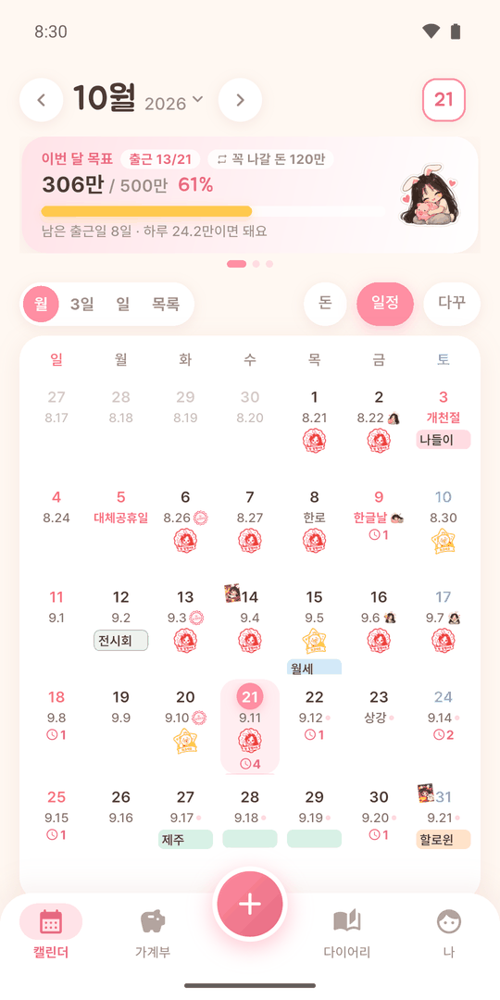
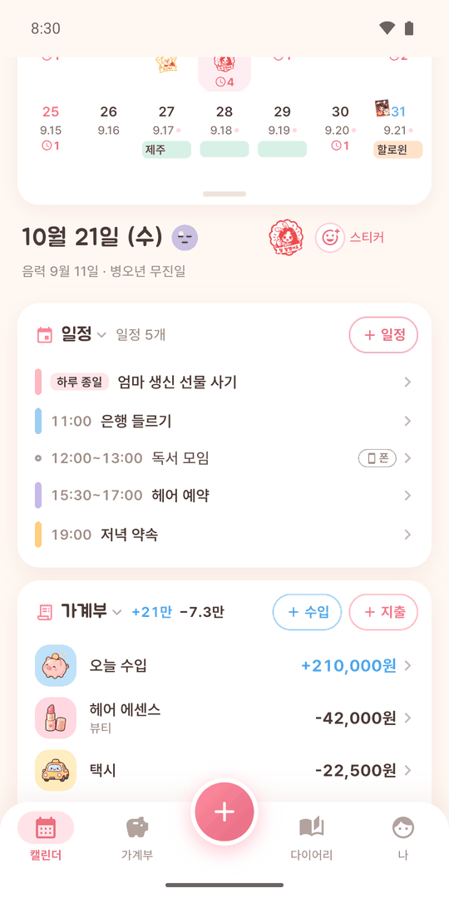
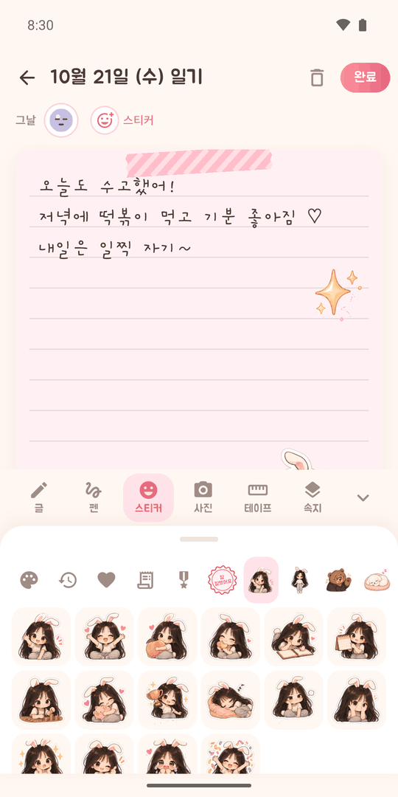
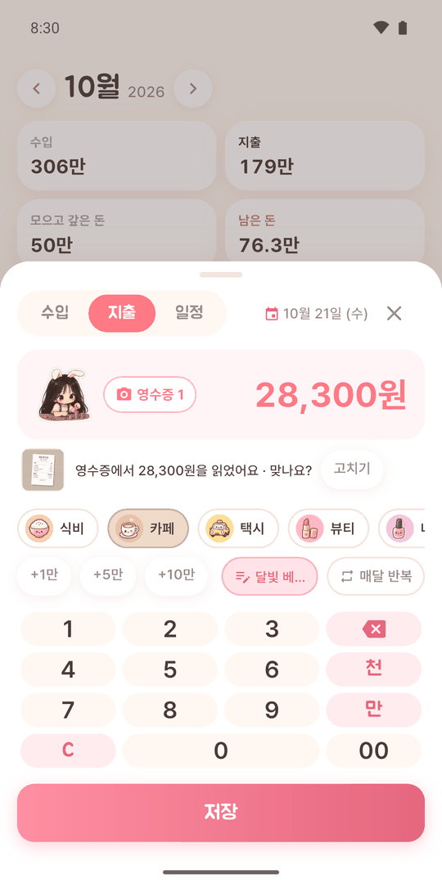
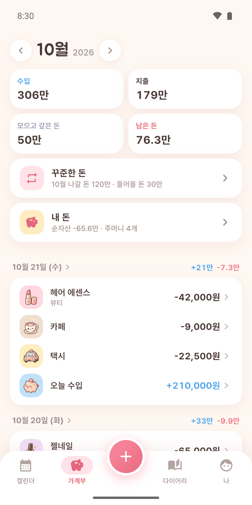
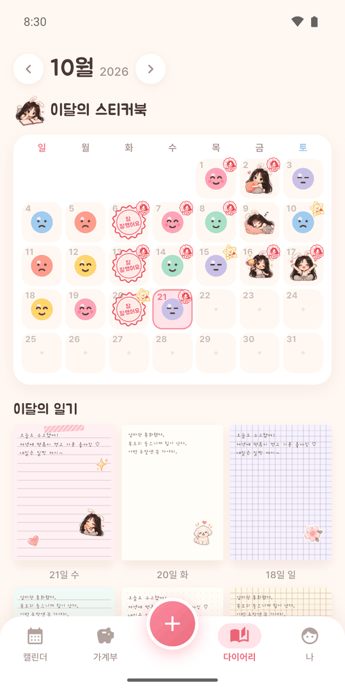
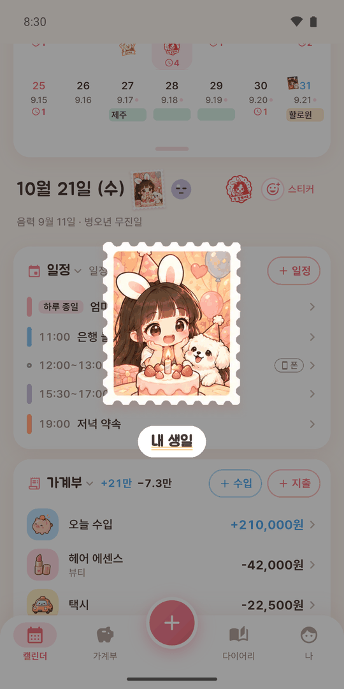
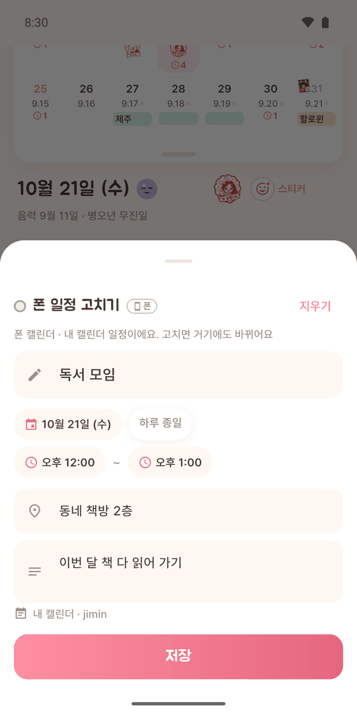
달력과 그날 페이지를 나란히 봐요
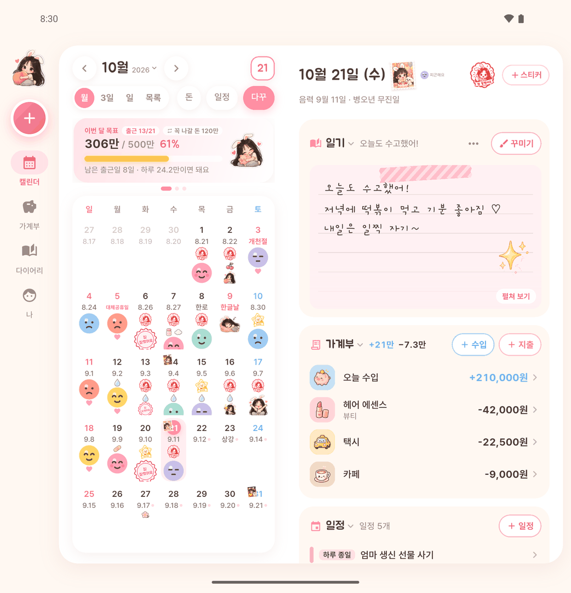
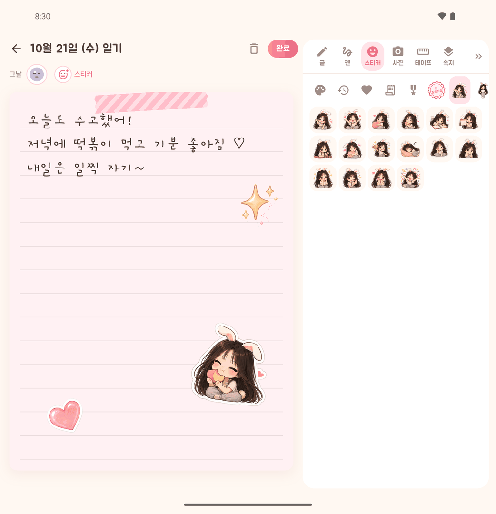
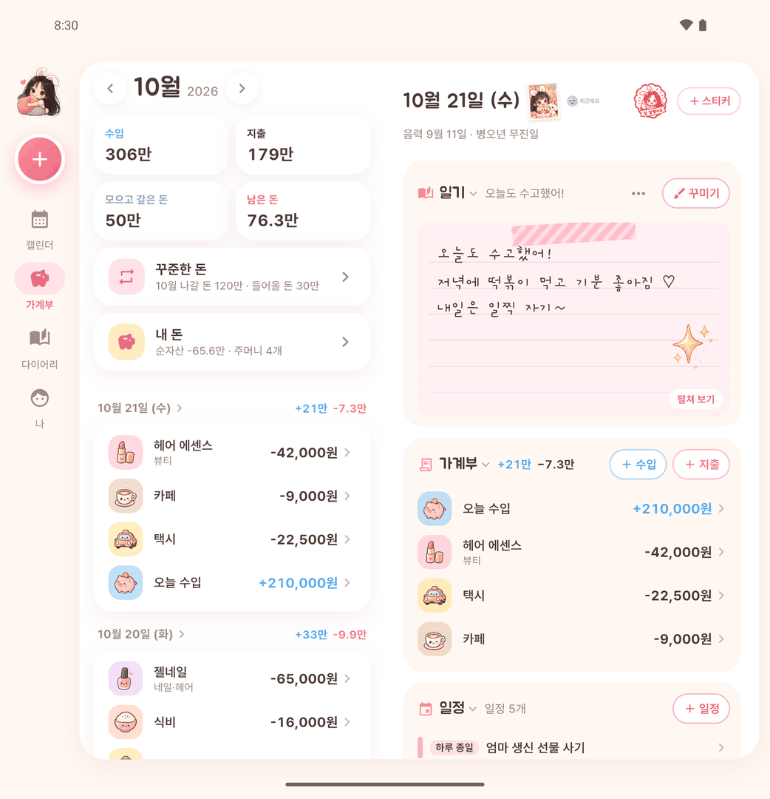
바형 폰은 물론, 접는 폰의 커버 화면·펼친 화면·반쯤 접은 모양에 맞춰 화면이 바뀌어요.
달력과 그날 페이지를 양쪽에 펼쳐 봐요. 일기도 넓게 꾸며요.
아래 화면에 수입·지출·일정 큰 단추가 나와 엄지로 바로 적어요.
오늘 한 줄과 이번 달 목표를 홈 화면에서 바로 봐요.
정은 인터넷에 연결하지 않아요. 일기도, 돈 기록도, 영수증 사진도 이 폰을 떠나지 않아요.
같은 폰에 할일관리 앱 '뿅'이 있으면, 뿅의 할 일을 정 달력 일정으로 받거나 정의 일정을 뿅 할 일로 보낼 수 있어요.
둘은 따로따로 써도 괜찮아요. 뿅 둘러보기 →